Foco, Yuupiii
Uma ideia cara e complicada: estampar sola e cabedal com o desenho continuando de uma peça para a outra. Combinei sublimação e UV para caber num orçamento baixo, e dirigi os mockups antes de produzir.
- Ano
- 2019
- O que fiz
- Criação, modelagem, direção de arte
- Processos
- Sublimação e UV
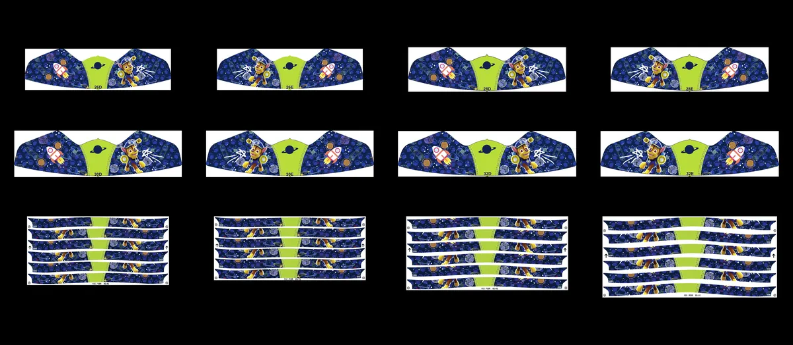
A ideia
Referências do mercado com o desenho passando para a sola.
Do desenho à folha de impressão
Mockups
Montagens de como cada tênis ficaria produzido, para aprovação antes de ir para a fábrica.
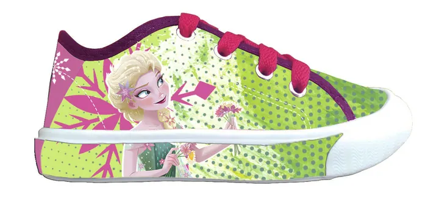
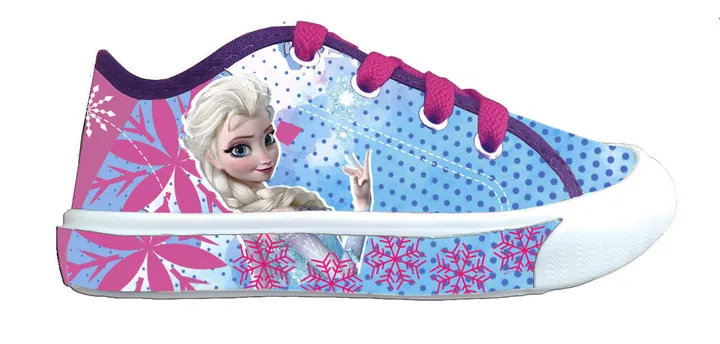
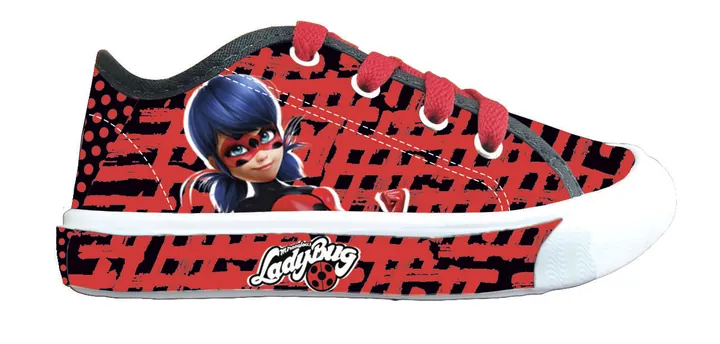
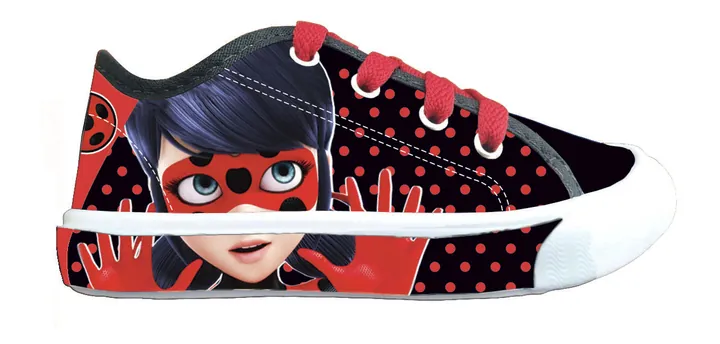
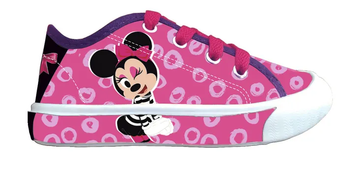
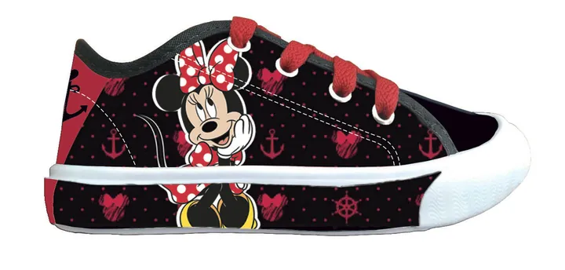
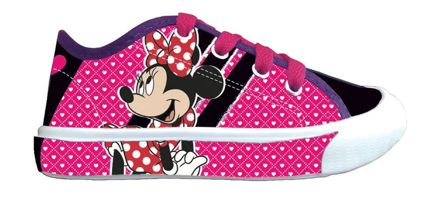
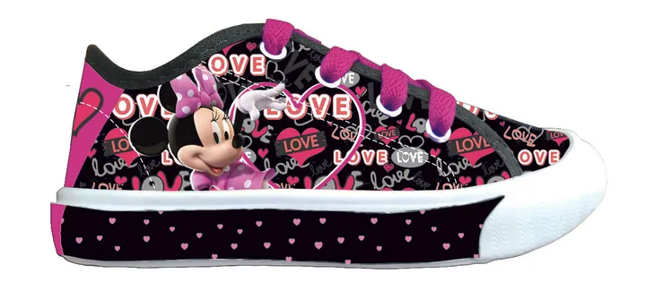
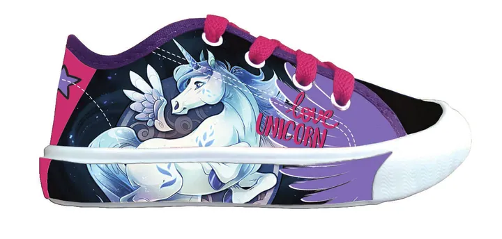
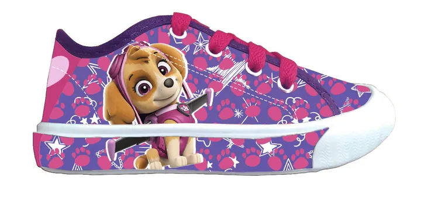
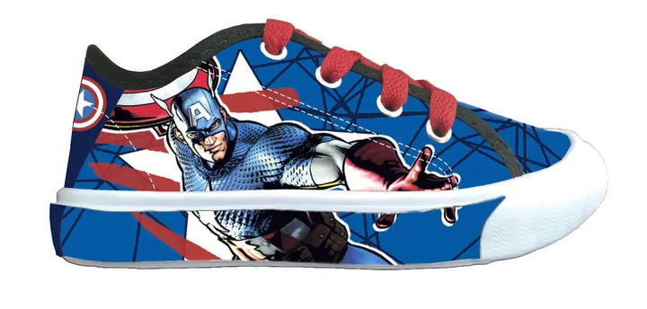
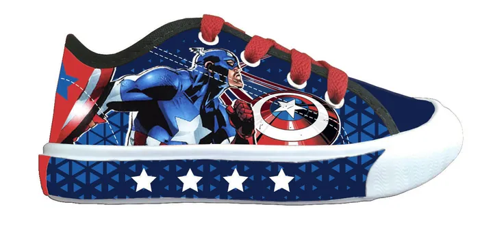
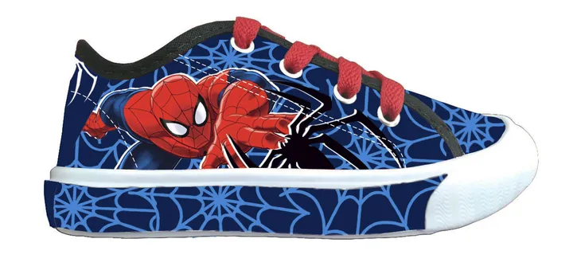
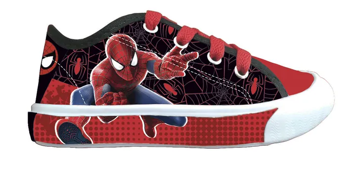
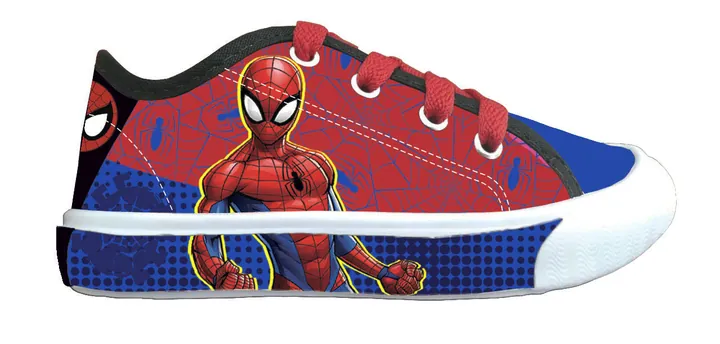
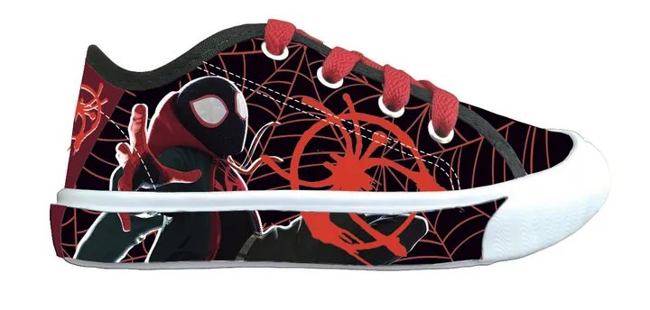
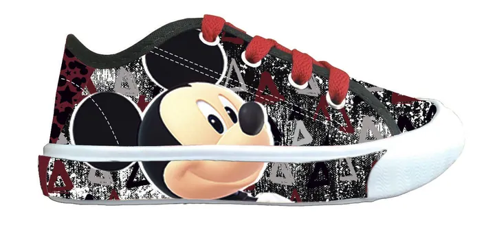
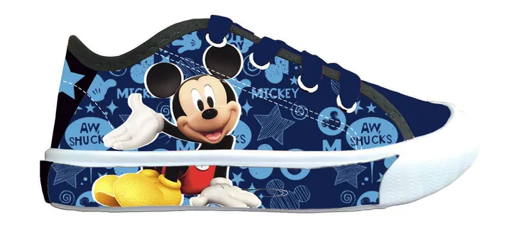
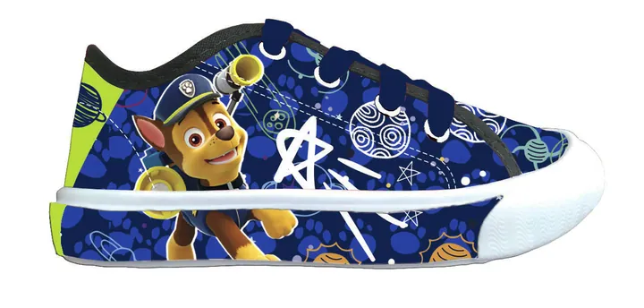
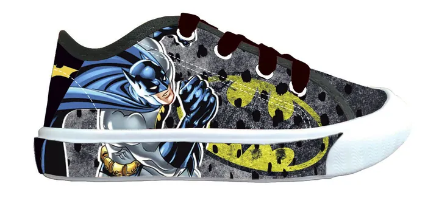
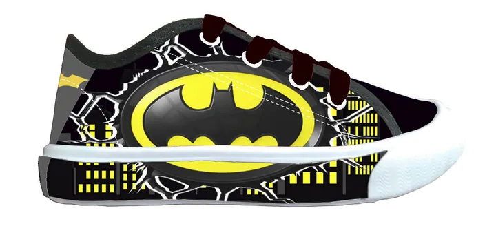
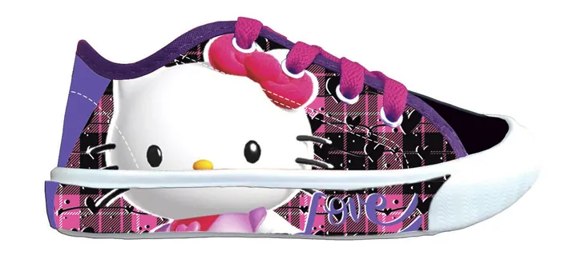
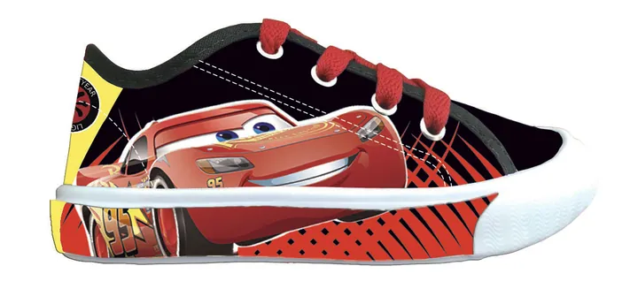
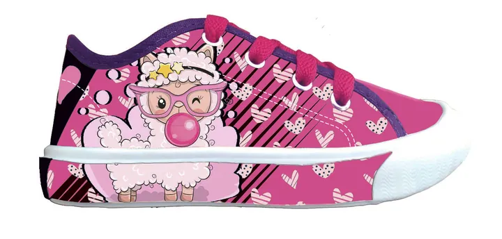
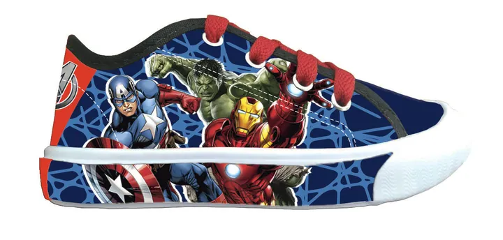
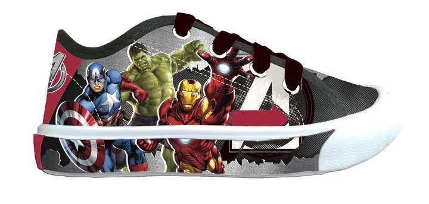
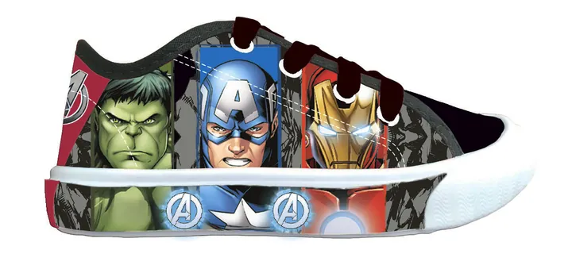
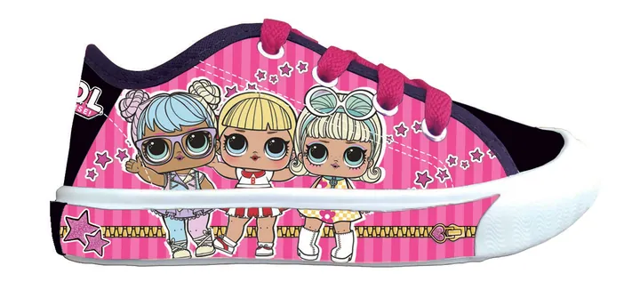
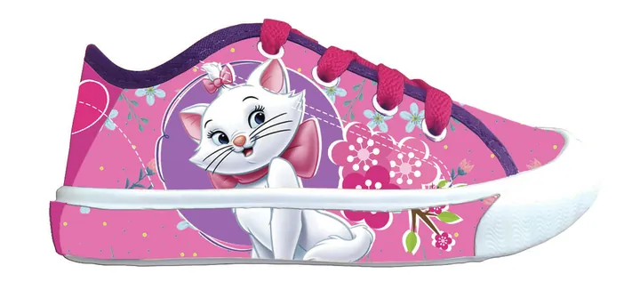
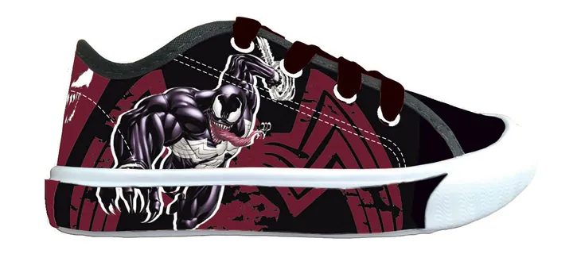
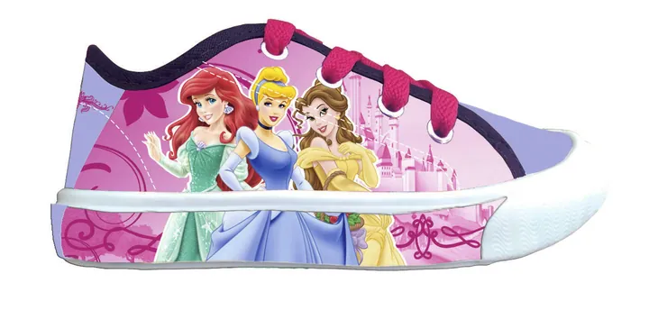